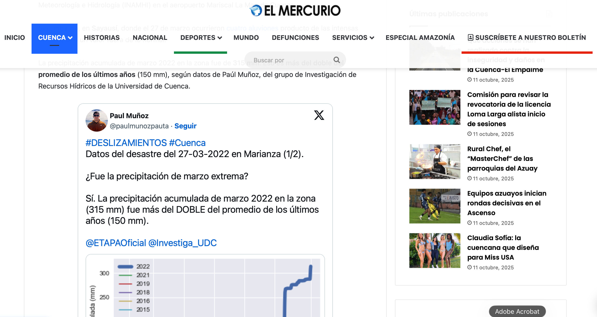

Scientific engagement
EGU 2026
Session co-convener
Gerald Corzo · Jeewanthi Sirisena · Paul Muñoz
Highlights innovative and interdisciplinary approaches that strengthen resilience in water, health, and environmental systems. Emphasizes integration of hydroinformatics, AI/ML, remote sensing, ICTs, and socio-economic perspectives to enhance monitoring, forecasting, and decision-making under climate change.
EGU 2025
Session co-convener
Gerald Corzo · Wenfeng Liu · Jeewanthi Sirisena · Carole Dalin · Yunqing Xuan · Paul Muñoz
Explores the integration of stakeholder engagement and advanced hydroinformatics techniques — remote sensing, machine learning, AI, and numerical modeling — to address challenges in hydrological sciences and natural hazards. Emphasizing both theoretical advancements and practical applications, particularly those involving co-development of research with decision-makers.
EGU 2024
Session co-convener
Yunqing Xuan · Gerald A. Corzo P · Vitali Diaz · Peter van Thienen · Georgia Papacharalampous · Paul Muñoz
Addresses the challenges of managing water systems across spatial and temporal scales, focusing on hydrological extremes and uncertainty in planning and decision-making. Integrates spatio-temporal analysis and uncertainty management in water networks, highlighting remote sensing, statistical methods, and machine learning to improve prediction, risk assessment, and resilience in both urban and rural contexts.
Media & public communication

Peer review service
Journals reviewed for
Nature communications · Journal of Hydrologic Engineering · Natural Hazards